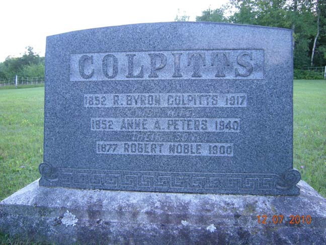
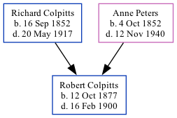

Robert Noble Colpitts 1877 - 1900
[ Home ] | [ Calendar ] | [ Surnames Index ] | [ Family History ]The eldest of 8 children of Richard Colpitts and Anne PetersRobert Colpitts, the third cousin twice-removed on the father's side of Nigel Horne, was born in New Brunswick, Canada on Oct 12, 18771,2,3.
Throughout his life, he lived in Albert, New Brunswick, Canada in 18811; and in Elgin, New Brunswick in 18912.
He died on Feb 16, 19003 and was buried in Pleasant Vale, New Brunswick after Feb 16, 19003.
Parents
- Richard Byron was born on Sep 16, 1852
- Anne Atkinson was born on Oct 4, 1852
Citations
- 1881 Census of Canada Ancestry.com Operations Inc
- 1891 Census of Canada Ancestry.com Operations Inc (Marital Status: SingleRelation to Head of House: Son)
- Canada, Find A Grave Index, 1600s-Current Ancestry.com Operations, Inc.
- Canada Census 1891 - Findmypast (was the son of the head of the household)
Media
Collpitts - headstone

Family Tree
Generated by ged2site. Last updated on Nov 13, 2024